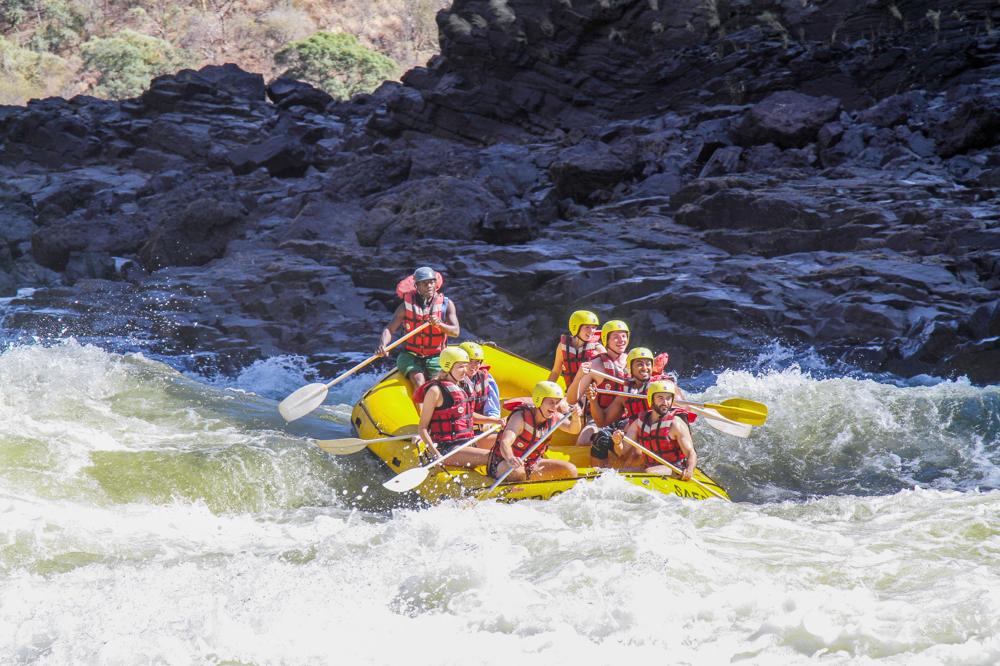

Trips
Goodwin Canyon Rafting Trips
Tucked away from sight among the golden rolling foothills, Goodwin Canyon on the lower Stanislaus River is a steep-walled lush volcanic slot canyon featuring fun Class III rapids and two Class IV rapids. Only a handful of rafters get to experience this unique whitewater rafting trip each year.

Difficulty & Scenery
- Fun Class III rapids
- Two Intermediate-Advanced Class IV+ rapids
- Secluded steep-walled volcanic canyon
Who Should Go
- People seeking a new rafting experience
- Small to medium groups
- Usual min. age: 15
Trips Include
- Pro guide & instruction
- Equipment & shuttle
- Fresh, delicious lunch
The South Fork of the American River!
The most popular destination for whitewater rafting in California, the South Fork of the American River is a great introduction to professionally guided rafting trips... the ideal river for families with kids and any group wanting to enjoy a fun yet relaxing day on the river together.

Difficulty & Scenery
- Beginner Class III
- Challenging, not overwhelming
- Rolling Sierra foothills
Who Should Go
- Novice & experienced
- Beginners, groups, return rafters
- Usual min. age: 8 (may be increased in spring)
Trips Include
- Pro guide & instruction
- Equipment & shuttle
- Fresh, delicious meals
Tom Sawyer Float Trips
The middle portion of the South Fork American is a perfect float trip for families with young children aged 5-7 years old. This meandering section features gentle Class II rapids and calm, relaxing pools. Lounge on the boats or swim in peaceful areas as you wind through the gold country of the Sierra Nevada foothills.
Difficulty & Scenery
- Trips for young kids, Class I-II
- Gentle rapids & calm pools
- Open, foothill canyon
Who Should Go
- Families with children too young for the Beginner-Intermediate trip
- Specialty trip for children 5-7 years old
Trips Include
- Pro guide & instruction
- Equipment & shuttle
- Inflatable kayaks
- Fun games for kids
- Picnic lunch